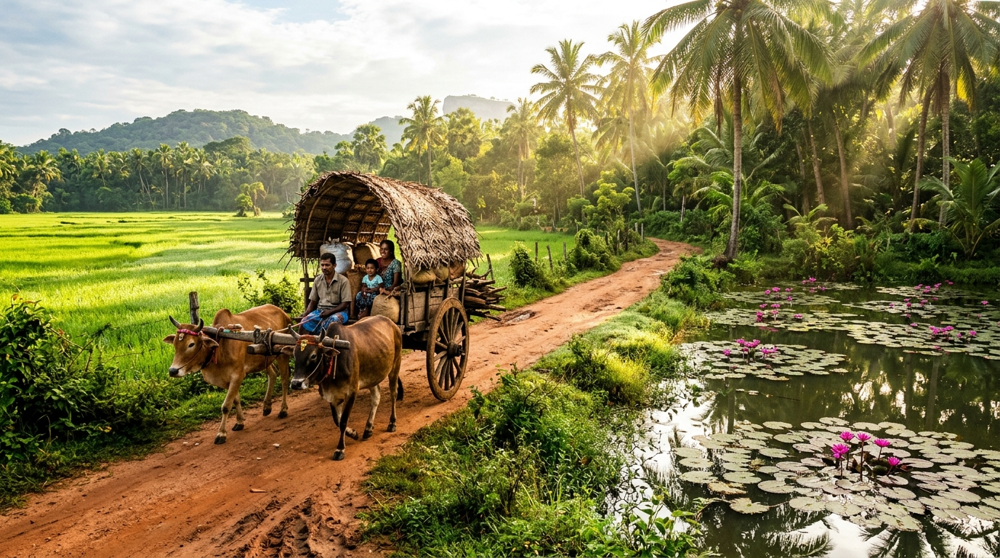

Hiriwadunna, near Habarana
Village Life & Local Encounters
Discover rural Sri Lanka through traditional village life, local hospitality, scenic countryside and authentic cultural encounters that bring you closer to the island's everyday traditions.